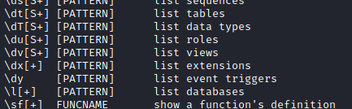
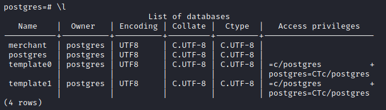
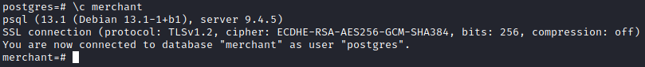
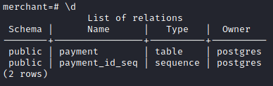

Basic Usage
Commands in PostgreSQLAlthough PostgreSQL uses SQL for queries, the client has its own set of commands that are far from intuitive. Whereas the MySQL client uses command mnemonics like use and show tables , Psql uses combinations of backslashes and single letters to issue commands. These commands can be listed with the \? help command.
list databases
 connect to a database
describe(list) the tables once we are connect to database
query a table
merchant=# select * from payment;
merchant=# TABLE payment;